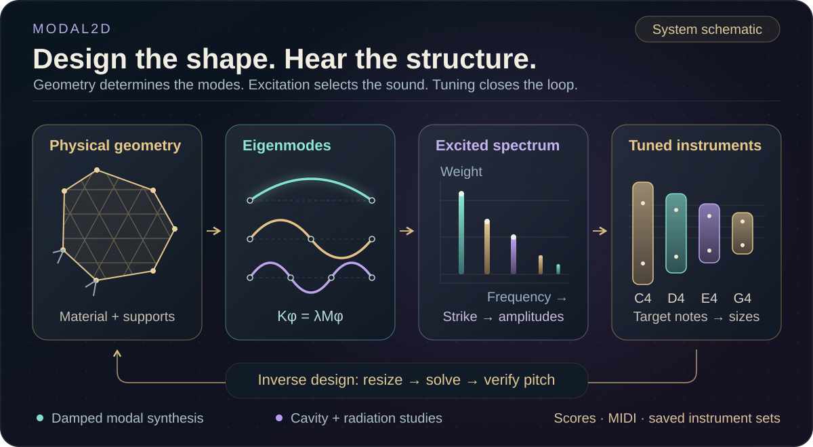
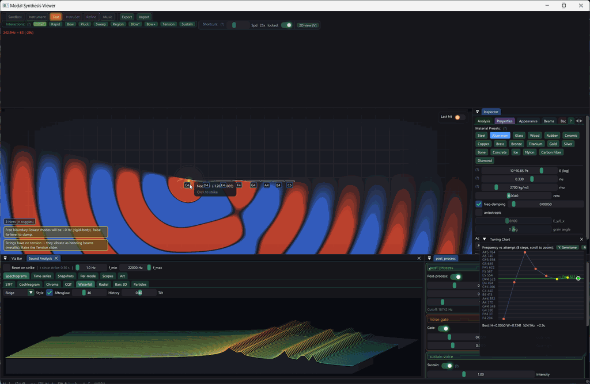

Modal2D
Build a musical instrument from its mechanics. Shape, material and supports define a finite-element response; a strike, bow or rub selects its audible modes; then careful manual design or constrained geometry search turns that response into a playable instrument.
- ◇
Shape and support
Mesh an object and choose its material and boundary conditions.
- φ
Solve the modes
Recover vibration patterns and frequencies from stiffness and mass matrices.
- ♪
Play and tune
Excite a modal mixture, then tune geometry toward a target pitch and a useful sound.
- ♬
Perform the set
Arrange tuned instruments in a score and hear them play together.
Geometry, numerical vibration and audible music remain parts of one inspectable design process.



Plate modes and the sand that finds them
Plate modes and the sand that finds them
Draws with
Artifact
Export
Purpose
Made with
Demonstrates
Wheel over the scene may zoom; move outside it to scroll the page.

Suspended · activate to run; playback pauses after the full panel leaves the vertical viewport.